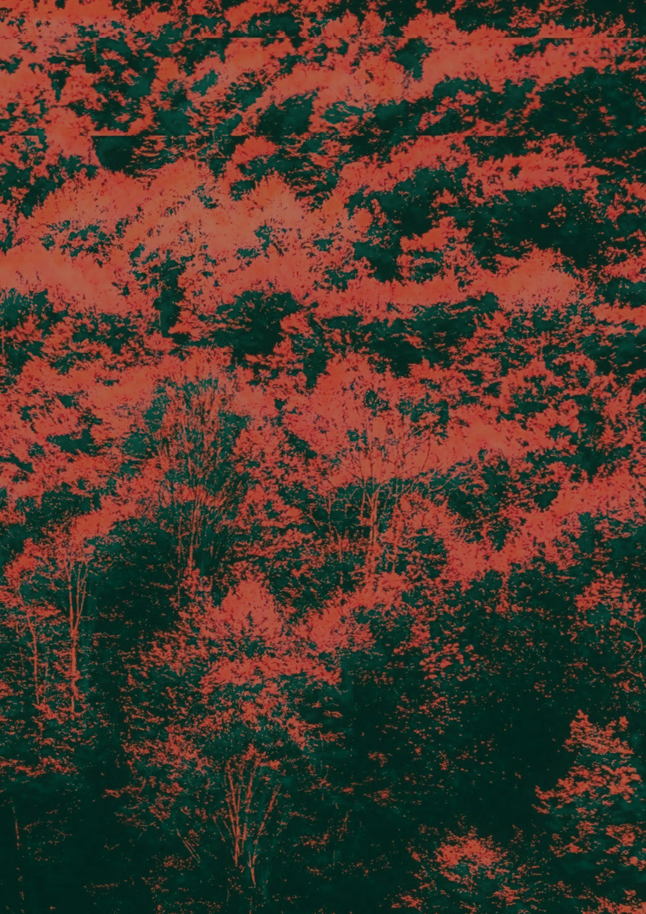

<div class="hero-section">
    <picture>
        <source 
            srcset="assets/images/forest/forest-320.webp 320w,
                    assets/images/forest/forest-640.webp 640w,
                    assets/images/forest/forest-1024.webp 1024w,
                    assets/images/forest/forest-1920.webp 1920w"
            sizes="(max-width: 320px) 320px,
                   (max-width: 640px) 640px,
                   (max-width: 1024px) 1024px,
                   1920px"
            type="image/webp">
        
    </picture>
    <div class="featured-show">
        <!-- Featured show widget will be added here -->
    </div>
</div>
<footer class="site-footer">
    <a href="https://90mil.berlin/privacypolicy/" target="_blank" rel="noopener noreferrer">Privacy Policy</a>
    <a href="https://www.90mil.berlin/impressum/" target="_blank" rel="noopener noreferrer">Impressum</a>
</footer>